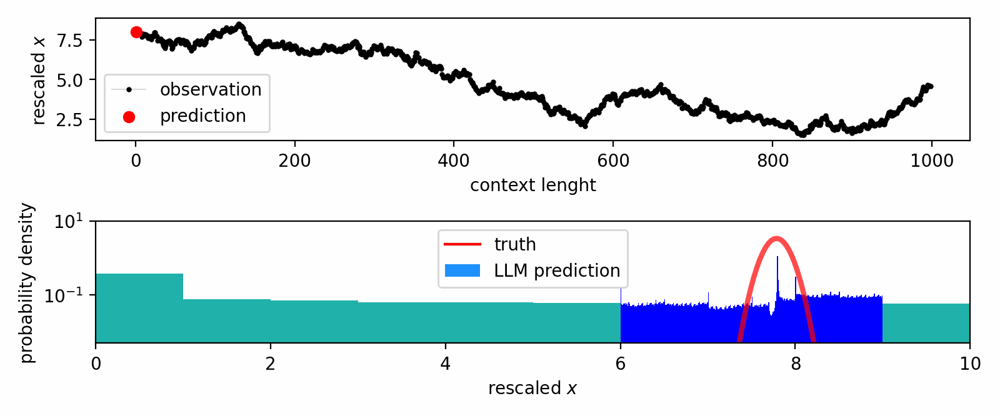
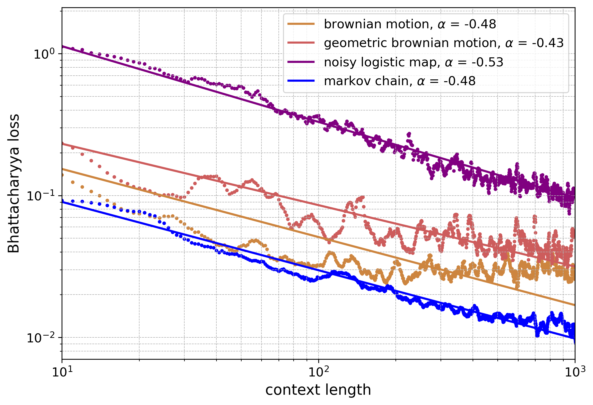
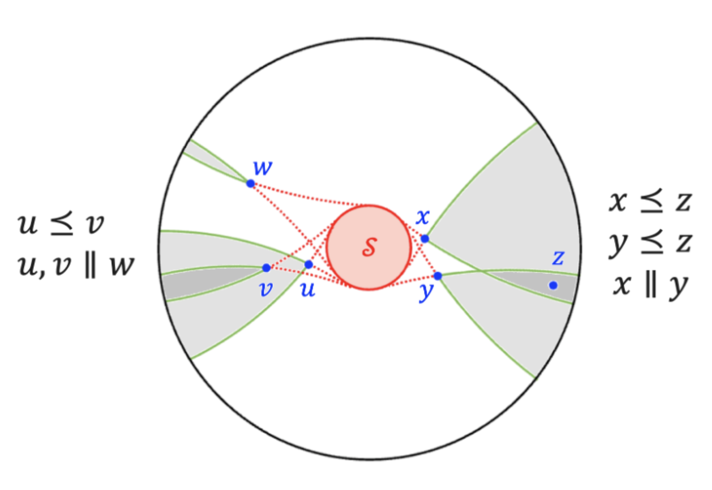
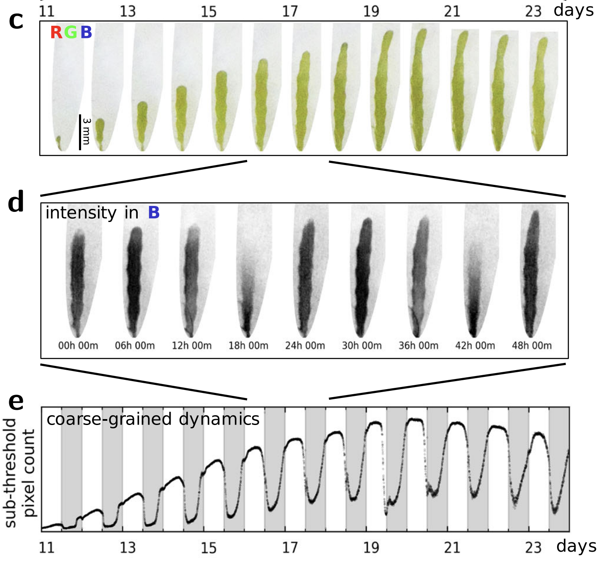

How do abstract thoughts differ from concrete memories?
Considering memories as fixed points within the brain's dynamical system,
we propose to understand abstraction as a hierarchy of slow manifolds,
which serve as coarse-grained roadmaps to these fixed points.
We construct a diffusion RNN (Recurrent Neural Network),
a neural-dynamical model that can perform memorization and abstraction.
We demonstrate diffusion RNN’s ability to perform dimensionality reduction on the MNIST dataset.
We present an analytic theory that elucidates the relation between the distribution of data
and the learned slow manifolds.


Could a pretrained LLM make sense of an unseen, synthetic language, say, a chain of symbols generated by a random Markov process?
Yes. In fact, we show that LLaMA 2 models possess uncanny abilities to in-context learn
a variety of stochstic systems, physical and symbolic. Our observation reveals an in-context version of neural scaling law.

In hyperbolic space, the volume of a ball grows exponentially with its radius, which mirrors the number of
nodes in a tree.
We provide a fast and intuitive embedding scheme by thinking of parent-child relations as subset relations between
shadows formed by a light source and opaque objects.

How do plants anticipate external environemnts and regulate internal states? Using coarse-grained
analysis and illumination perturbations, we identify wave-like circadian patterns coupled to
an internal oscillator and entrained by external illuminations.